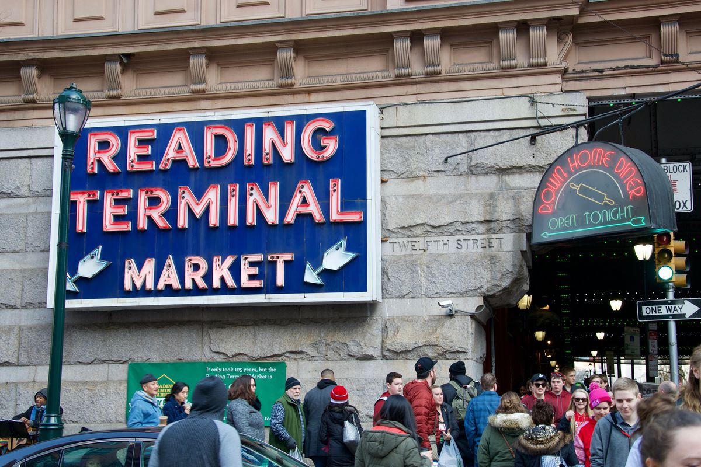
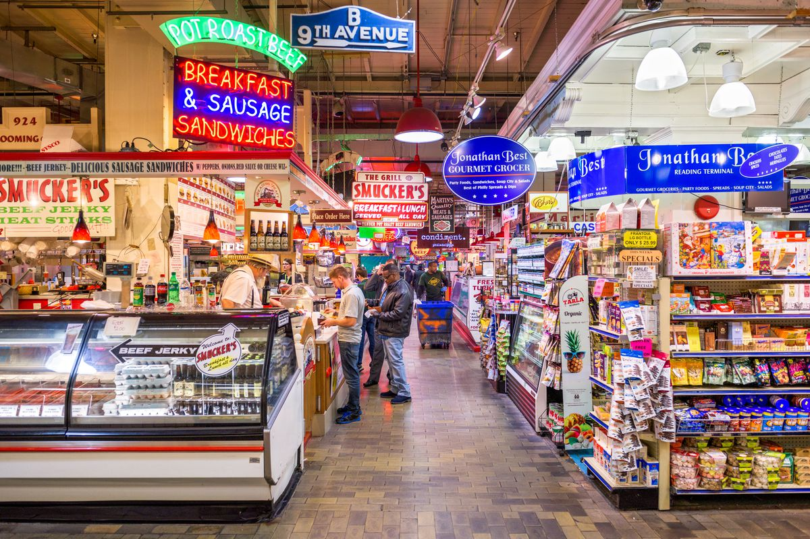
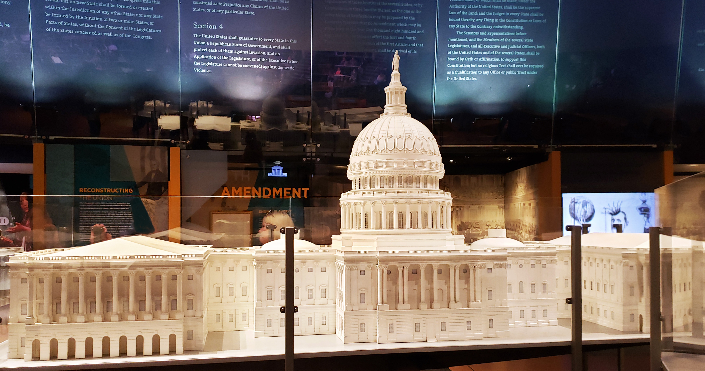
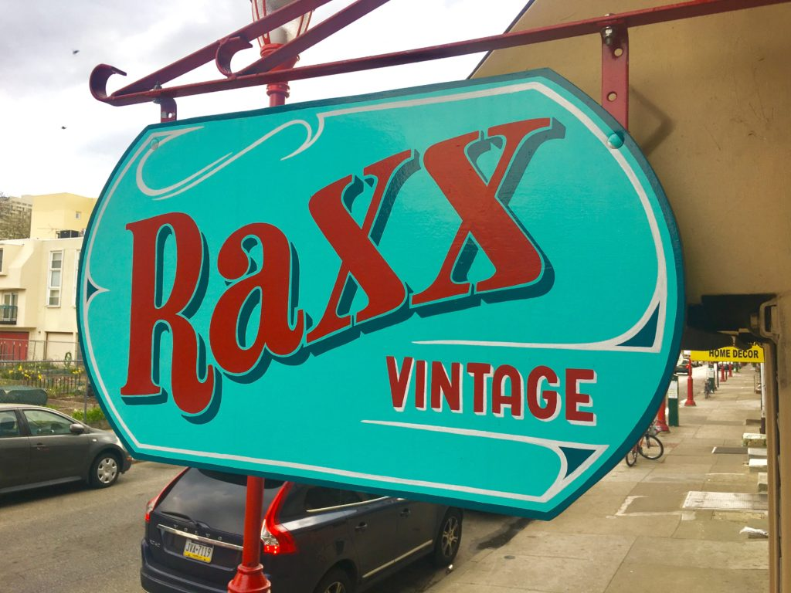
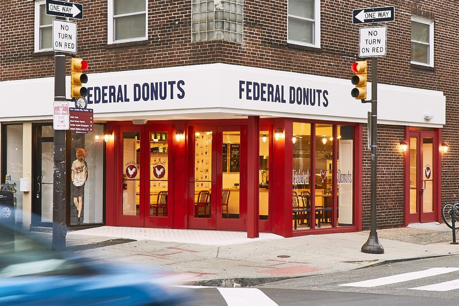
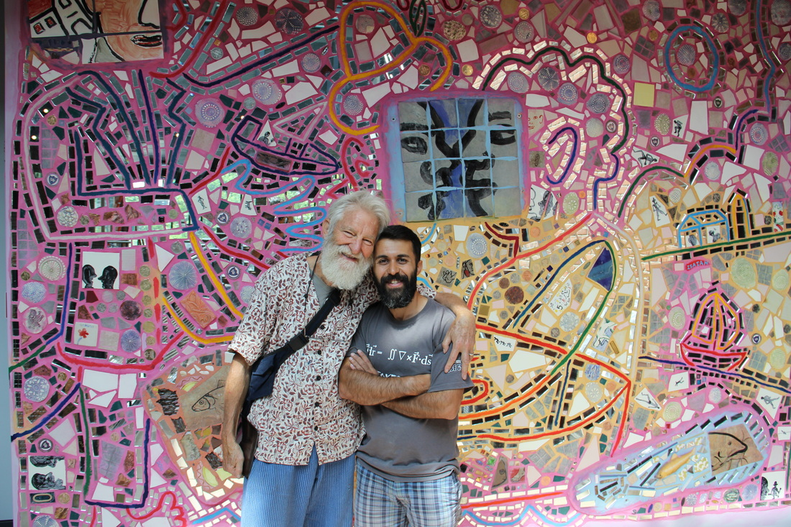
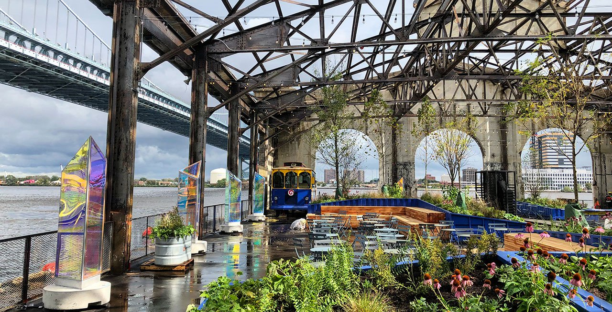
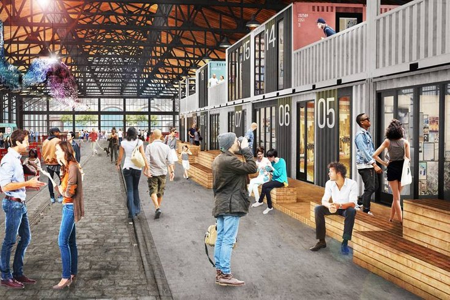
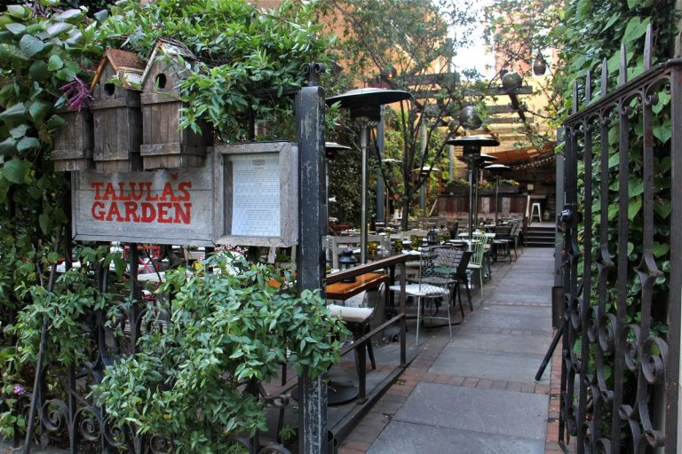
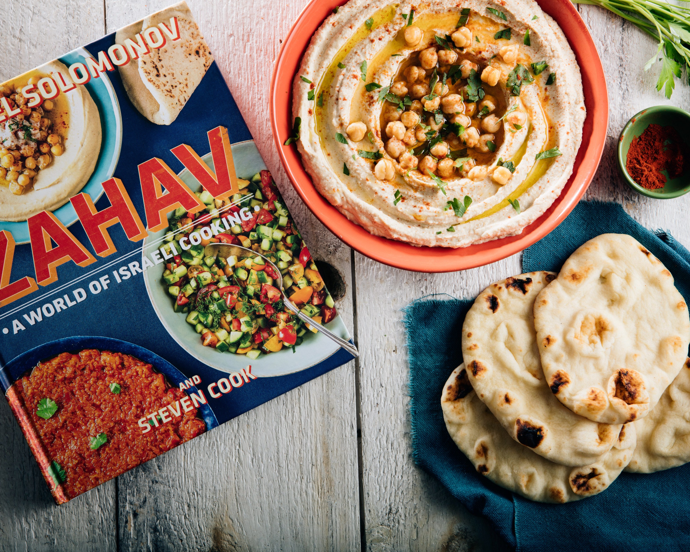

Check-out these top-rated activities all located near Philadelphia's historic center.
Take a walk throught the Reading Terminal Market. Enjoy your breakfast on your walk to The Constitution Center or in the seating area in the center of the market.
 
HOURS
Everyday: 8 a.m. – 6 p.m.

After you visit The Constitution Center wander down to South Street for some eclectic shopping at Raxx Vintage and Wooden Shoe Books. And don't forget to pick up a Federal Donut!
 
While you're on South Street you might as well find your way down to the Philadelphia's Magic Gardens. Even the view from the street is super cool!

Cherry Street Pier is a public space filled with artist studios and public artworks in progress. Take a stroll out to the river to get a close-up view of the Ben Franklin Bridge and enjoy the view while enjoying an ice cream cone.
 
For an fun and delicious Philly dining experience don't forget to make a reservation at Talula's or Zahav.
 